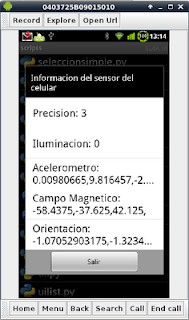

Se explicará como manejar la información del sensor del celular (orientación, acelerometro, magnetometro, precisión e iluminación).
La API tiene las siguientes funciones:
startSensingTimed(
Entero SensorNum: 1=Todo, 2=Acelerometro, 3=Magnetometro, 4=Iluminación;
Entero tiempo: Mínimo tiempo para realizar la lectura en milisegundos
): Inicia los eventos de lectura del sensor del celular.
stopSensing(): Detiene la lectura del sensor
sensorsReadMagnetometer(): Devuelve una lista con la información del campo magnetico, una lista con los valores x, y, z.
sensorsReadOrientation(): Devuelve una lista de valores sobre la orientación: azimut, pitch, roll.
sensorsGetAccuracy():Retorna la precisión de la lectura.
sensorsGetLight(): Retorna la iluminación recibida en el equipo.
sensorsReadAccelerometer():Retorna una lista con los valores x,y,z del acelerometro.
Primero se activa la lectura del sensor por 30seg, se genera un mensaje que se inicia el proceso de lectura, lluego se muestra la lista de los valores capturados, se le pide al usuario que se salga de la aplicación y así termina la captura de la información del sensor del celular.
El código se muestra a continuación:
#Importar el módulo android
import android
#Importar sleep
from time import sleep
#Se crea la instancia del objeto android
droid=android.Android()
#Se activa el sensor con un tiempo de activación de 30seg.
droid.startSensingTimed(1,30000)
#Se crea el mensaje y la info a desplegar en el dialogo.
titulo = "Inicio de captura de informacion de los sensores"
mensaje = "Espere 10 seg"
#Se crea la barra spinner con un tiempo de 10 seg
droid.dialogCreateSpinnerProgress(titulo, mensaje)
droid.dialogShow()
sleep(10)
droid.dialogDismiss()
#Se captura la información de la precisión, iluminación, acelerometro, #magnetometro y orientación
precision = droid.sensorsGetAccuracy()
luz = droid.sensorsGetLight()
acelerometro = droid.sensorsReadAccelerometer()
magnetometro = droid.sensorsReadMagnetometer()
orientacion = droid.sensorsReadOrientation()
#Se desactiva el sensor del celular
droid.stopSensing()
#Se crea variables de texto con un formato para mostrar la información
textAcelerometro = ""
textMagnetometro = ""
textOrientacion = ""
for i in acelerometro[1]:
textAcelerometro = textAcelerometro + "%s," %i
for i in orientacion[1]:
textOrientacion = textOrientacion + "%s," %i
for i in magnetometro[1]:
textMagnetometro = textMagnetometro + "%s," %i
infoPrecision = "Precision: %s " %precision[1]
infoIluminacion = "Iluminacion: %s" %luz[1]
infoAcelerometro = "Acelerometro: %s" %textAcelerometro
infoMagnetometro = "Campo Magnetico: %s" %textMagnetometro
infoOrientacion = "Orientacion: %s" %textOrientacion
#Se presenta la información en pantalla.
droid.dialogCreateAlert("Informacion del sensor del celular")
datos = [infoPrecision,infoIluminacion,infoAcelerometro,infoMagnetometro,infoOrientacion]
droid.dialogSetItems(datos)
droid.dialogSetNegativeButtonText('Salir')
droid.dialogShow()
respuesta = droid.dialogGetResponse().result
if respuesta['which'] == "negative":
droid.makeToast("Saliendo del programa")
time.sleep(2)
La figura muestra cuando se ejecuta la apliación, se muestra un mensaje de expera para la lectura del sensor y luego muestra la información obtenida:



El código QR de la aplicación se muestra en la siguiente figura:

===
¡Haz tu donativo! Si te gustó el artículo puedes realizar un donativo con Bitcoin (BTC) usando la billetera digital de tu preferencia a la siguiente dirección: 17MtNybhdkA9GV3UNS6BTwPcuhjXoPrSzV
O Escaneando el código QR desde billetera:

Comments !